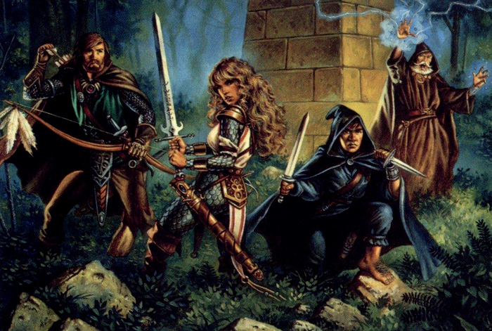
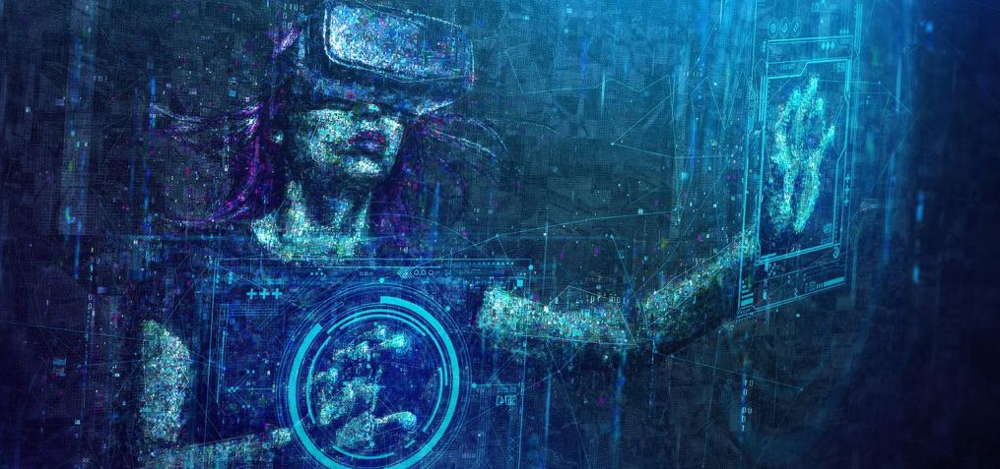

Shootings for the conquer
San Diego Comic-Con is known for being a showplace for outrageous costumes, but the world’s largest pop culture event requires all cosplayers to get their mock weaponry inspected prior to entering the convention floor.
Because this is Comic-Con, though, there are always new questions: Who knew a pink tennis racquet could be a weapon? Or zombie Freddie Mercury’s Killer Queen microphone stand could be one? Even Wonder Woman needs to get her magic lasso tagged
at the prop weapons check station at Comic-Con. On the flip side, a Deadpool cosplayer can walk around Comic-Con with two prop guns, two prop ninja swords and a prop knife — after they pass inspection. Metal barbed wire, swords, knives,
throwing stars and claws are not permitted at Comic-Con. Baseball bats — wooden or metal — are prohibited, too. Lightsabers, staffs and canes are OK. Realistic prop guns and costume swords must be tethered to a costume. Costume guns that
look like they are from another universe can be carried by cosplayers. The seasoned Comic-Con attendees come to the pop culture convention with their prop handguns, swords and other weapons already zip-tied to their cos-play costumes.
Prop weapons that don’t pass inspection can be stowed at coat check or taken back to a car or hotel room.
For the glory & honor

Explore places, combine items, and experience stories in Adventure Games, a series of co-operative games from German publisher KOSMOS.
In each of these titles, players are presented with a mysterious story that they must unravel over the course of play. Working together, players explore common areas, talk to people, look for clues, and combine various items to reveal the
secret of the story. Depending on what decisions the players make, the course of history changes and there is no going back! Unlike the co-operative EXIT: The Game series, titles in this series focus on the telling and discovery of the
story with no time pressure. That said, many different paths can be experienced during play, with more than one correct resolution to the story waiting to be discovered. Each title consists of three chapters, each taking about 75 minutes
to play. Nothing is destroyed, so the games can be played multiple times. In The Dungeon, the players awaken in a prison cell in the middle ages with no memory of how they got there. What happened? What strange things are taking place
in this dungeon? And most importantly, how can they get out? Over three chapters, players will jointly explore rooms, combine objects, and perhaps even encounter creatures that lurk in the dark rooms of the old castle...

Live on your blood the middle age!
A role-playing game (sometimes spelled roleplaying game;[1][2] abbreviated RPG) is a game in which players assume the roles of characters in a fictional setting.
Role-playing game entertainment (or RPG-E) has never been more popular, and Geek & Sundry has been a pioneer in creating much of the RPG-based programming fans love. This panel will cover the range of G&S's RPG-E content and delve into this
popular style of collaborative game-based storytelling, fueled by imagination and presented as content for an audience of gaming enthusiasts as well as anyone who likes a good story. Hear from both the creators and the talent as they share
personal stories, insider advice, and thoughts on the future of this new and exciting entertainment format. Moderated by Denise Pantoja (producer, Relics and Rarities) and featuring Deborah Ann Woll (Relics and Rarities, Marvel's Daredevil,
True Blood), Jason Charles Miller (Starter Kit), Amy Dallen (Callisto-6. TBD RPG), B. Dave Walters (Vampire: The Masquerade: LA by Night; writer; Dungeons & Dragons: A Darkened Wish), and Eric Campbell (Callisto*6, Shield of Tomorrow).

Future crossing to it's limit!
Virtual reality in fiction describes fictional representations of the technological concept of virtual reality.
Many science fiction books and films have imagined characters being "trapped in virtual reality" or entering into virtual reality. Laurence Manning's 1933 series of short stories, "The Man Who Awoke"—later a novel—describes a time when people
ask to be connected to a machine that replaces all their senses with electrical impulses and, thus, live a virtual life chosen by them (à la The Matrix, but voluntary, not imposed). A comprehensive and specific fictional model for virtual
reality was published in 1935 in the short story "Pygmalion's Spectacles"[5] by Stanley G. Weinbaum. Other science fiction books have promoted the idea of virtual reality as a partial, but not total, substitution for the misery of reality,
or have touted it as a method for creating virtual worlds in which one may escape from Earth. Stanisław Lem's 1961 story "I (Profesor Corcoran)", translated in English as "Further Reminiscences of Ijon Tichy I",[6] dealt with a scientist
who created a number of computer-simulated people living in a virtual world. Lem further explored the implications of what he termed "phantomatics" in his nonfictional 1964 treatise Summa Technologiae. A number of other popular fictional
works use the concept of virtual reality. These include William Gibson's 1984 Neuromancer, which defined the concept of cyberspace, and his 1994 Virtual Light, where a presentation viewable in VR-like goggles was the MacGuffin. Other examples
are Neal Stephenson's Snow Crash, in which he made extensive reference to the term avatar to describe one's representation in a virtual world, and Rudy Rucker's The Hacker and the Ants, in which a programmer uses VR for robot design and
testing. The Otherland series of 4 novels by Tad Williams, published from 1996 to 2001 and set in the 2070s, shows a world where the Internet has become accessible via virtual reality. More recently, the 2011 novel Ready Player One by
Ernest Cline is about a virtual reality system called the OASIS that people use to escape from the grim reality of a dying Earth in 2045

Feel a need for speed like never before!
The racing video game genre is the genre of video games, either in the first-person or third-person perspective, in which the player partakes in a racing competition with any type of land, water, air or space vehicles.
In 2000, Angel Studios (now Rockstar San Diego) introduced the first free-roaming, or the former "free form", racing game on video game consoles and handheld game consoles with Midnight Club: Street Racing which released on the PlayStation
2 and Game Boy Advance. The game allowed the player to drive anywhere around virtual recreations of London and New York. Instead of using enclosed tracks for races, the game uses various checkpoints on the free roam map as the pathway
of the race, giving the player the option to take various shortcuts or any other route to the checkpoints of the race. In 2001 Namco released Wangan Midnight to the arcade and later released an upgrade called Wangan Midnight R. Wangan
Midnight R was also ported to the PlayStation 2 by Genki as just Wangan Midnight. In 2003, Rockstar San Diego's Midnight Club II was the first racing game to feature both playable cars and playable motorcycles. Namco released a sort of
sequel to Wangan Midnight R called Wangan Midnight Maximum Tune. There is a wide gamut of driving games ranging from simple action-arcade racers like Mario Kart: Double Dash (for GameCube) and Nicktoon Racers to ultra-realistic simulators
like Grand Prix Legends, iRacing, Virtual Grand Prix 3, Live for Speed, NetKar Pro, GT Legends, GTR2, rFactor, X Motor Racing and iPad 3D racer Exhilarace — and everything in between.
Credits & Web Page Infos